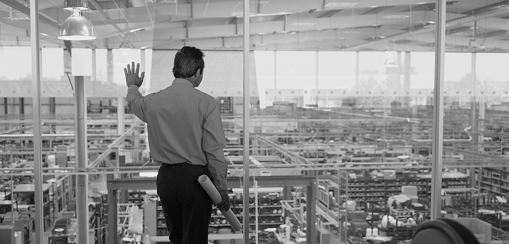
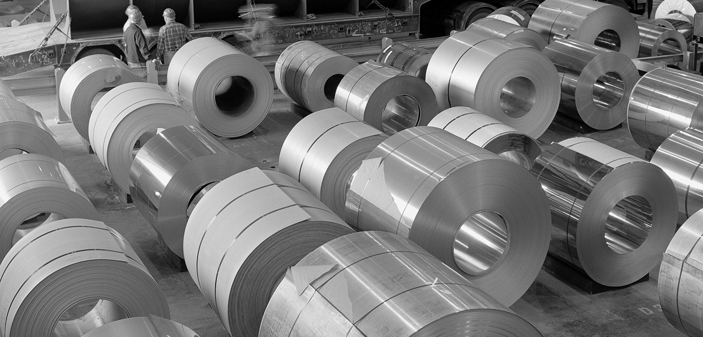

2012 Faaliyet Raporu
Ana Sayfa
Sunuş
Yönetim ve Kurumsal Yönetim Uygulamaları
Finansal Bilgiler ve Risk Yönetimi
English
Vizyonumuz-Misyonumuz
Kurumsal Profil
Başlıca Finansal Göstergeler
Ziraat Bankası'nın Sektör Payları-31 Aralık 2012
Ziraat Bankası Ortaklık Yapısı ve Hesap Dönemi İçinde Ana Sözleşmede Yapılan Değişiklikler
Hep Birlikte Daha İyiye...
Ziraat Bankası Tarihinden Satırbaşları
Yönetim Kurulu Başkanı'nın Mesajı
Genel Müdür'ün Mesajı
Makroekonomik ve Sektörel Görünüm
2012 Yılının Değerlendirmesi: Stratejiler, Gelişmeler ve Geleceğe Dair Hedefler
Sosyal Sorumluluk Çalışmaları
Ziraat Bankası İştiraklerinde 2012 Yılı
Yıllık Faaliyet Raporu Uygunluk Görüşü
Ziraat Bankası Yönetim Kurulu
Ziraat Bankası Üst Yönetimi
Yönetim Kurulu Özet Raporu
İnsan Kaynakları Uygulamaları
Komitelerin Faaliyetleri ile İlgili Bilgiler
Yönetim Kurulu ve Denetim Komitesi Üyelerinin Hesap Dönemi İçinde Yapılan İlgili Toplantılara Katılımları Hakkında Bilgiler
Bankanın Dahil Olduğu Risk Grubu ile Yaptığı İşlemlere İlişkin Bilgiler
Destek Hizmeti Alınan Kuruluşlara İlişkin Bilgiler
Denetçi Raporu
Denetim Komitesinin İç Denetim, İç Kontrol ve Risk Yönetimi Sistemlerinin İşleyişine İlişkin Değerlendirmeleri
31 Aralık 2012 Tarihi İtibarıyla Hazırlanan Kamuya Açıklanacak Konsolide Olmayan Finansal Tablolar, Bunlara İlişkin Açıklama ve Dipnotlar ile Bağımsız Denetim Raporu
Bankanın Mali Durumu, Kârlılık ve Borç Ödeme Gücüne İlişkin Değerlendirme
Rasyolar
Risk Türleri İtibarıyla Uygulanan Risk Yönetim Politikalarına İlişkin Bilgiler
31 Aralık 2008-31 Aralık 2012 Özet Bilanço ve Gelir Tablosu
Derecelendirme Kuruluşlarının Notları
31 Aralık 2012 Tarihi İtibarıyla Hazırlanan Kamuya Açıklanacak Konsolide Finansal Tablolar, Bunlara İlişkin Açıklama ve Dipnotlar ile Bağımsız Denetim Raporu
 